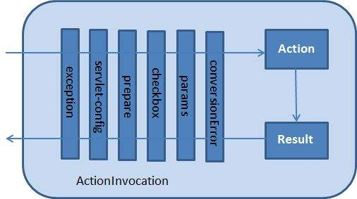

Interceptors(拦截器)在概念上同servlet过滤器以及JDK动态代理类一样。拦截器可以透切(crosscutting)action以及框架来实现一些特定的功能。例如：
- 在action调用执行前，预先执行某些代码；
- 在action调用和执行后，再次执行你指定的代码；
- 用来捕捉异常，以便可以执行替代处理(alternate processing)。
事实上，Struts 2框架的许多特性都是使用拦截器实现的。例如： exception handling, file uploading, lifecycle callbacks等等。因为Struts 2在拦截器上强调了它的大部分功能，因此不太可能为单个action分配7或8个拦截器。
Struts 2框架拦截器
Struts 2框架提供了许多预先配置并且可以开箱即用的拦截器。下面是一些比较重要的拦截器：
| Interceptor | Description |
|---|---|
| alias | 允许参数(parameters)跨请求拥有不同的别名 |
| checkbox | 通过为未选中的复选框(check box)添加参数值false来协助管理复选框 |
| conversionError | 将字符串转换为参数类型的错误信息放入Action的字段错误中 |
| createSession | 自动创建一个HTTP session如果它没有存在 |
| debugging | 为开发人员提供几个不同的调式界面 |
| execAndWait | 当action在后台执行时，给用户提供一个等待页面 |
| exception | 将action引发的异常映射到result,并通过重定向自动处理异常 |
| fileUpload | 便于文件上传 |
| i18n | 在用户回话期间跟踪所选的语言环境 |
| logger | 通过输出被执行的action的名字来提供简单的日志信息 |
| params | 允许在action中设置request的参数 |
| prepare | 这是一个用来的做预处理工作的典型代表，例如：建立数据库连接 |
| profile | 允许为action记录简单的分析信息 |
| scope | 在session或application域中存储和检索action的状态 |
| ServletConfig | 提供可以访问各种基于servlet信息的action |
| timer | 为action需要执行多少时间提供一个简单的分析信息 |
| token | 检查有效标记的action以防止重复的表单提交 |
| validation | 为action的提供验证支持 |
如何使用拦截器？
我们可以直接在struts.xml配置文件中配置Struts 2已经提供的拦截器，例如使用timer拦截器来打印执行action所需要的时间，同时还可以使用params拦截器来将request参数传递给action。
1 | <?xml version = "1.0" Encoding = "UTF-8"?> |
创建自定义拦截器
在我们的应用程序中使用拦截器来透切(crosscutting)应用使用一种优雅的方式。创建自定义的拦截器很容易，只需要实现Interceptor接口就行了。
1 | public interface Interceptor extends Serializable { |
其中init()方法用来初始化拦截器，destroy()方法被用来销毁拦截器。不像action，拦截器request中被重复使用，所以它需要考虑线程安全问题，特别是intercept()方法。
ActionInvocation对象提供的运行环境的访问。它允许访问action本身和调用action的方法并确定action是否已经被调用。
如果你不需要实现初始化和销毁拦截器的代码，可以直接继承AbstractInterceptor类，它不需要实现init()和destroy()方法。
1 | package com.rovo98.struts2; |
实际的action将通过拦截器调用invocation.invoke()方法来执行。因此我们action执行前或执行后加入我们的处理代码。
框架本身通过对ActionInvocation对象的invoke()方法的第一次调用来启动该过程。每次调用invoke()，ActionInvocation都会查询其状态并执行下一个拦截器。当所有的配置的拦截器都执行完了之后，action才会被执行。
下面是其工作流程图：

拦截器栈
不难想象，当我们为单个action配置多个拦截器时，它们很快会变得很难管理。所以Struts 2引入了拦截器栈的概念来管理。下面是一个在sturtsdefault.xml配置文件中的一个拦截器栈：
1 | <interceptor-stack name = "basicStack"> |
上面的拦截器栈拥有唯一标识basicStack,当我们使用这个拦截器栈时，实际上和之前配置单个拦截器使用的是同样的语法：
1 | <action name= "hello" class= "com.rovo98.struts2.MyActoin" > |
通过上面的配置，为helloaction 配置了六个拦截器，且这六个拦截器在action被执行前将被按顺序执行。